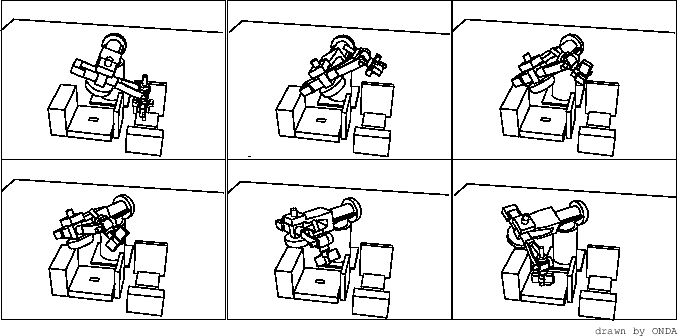

Subsections
EusLispは、知能ロボットの研究を目的とした言語で、Common Lispと
オブジェクト指向型プログラミングをベースとしている。ロボットの研究では、
センサデータの処理、環境認識、障害物回避動作計画、作業計画などが
重要なテーマとして取り上げられるが、これらに共通するのは、ロボットと
外界の3次元幾何モデルである。EusLispを開発する動機となったのは、
記号処理システムから簡単に使えて拡張性の高いソリッドモデラーの
必要性を痛感したからである。既存のソリッドモデラーを調べてわかったことは、
その実現にとって最も重要な機能は、数値演算ではなくモデル要素の
トポロジーを表現、管理するためのリスト処理能力であった。もちろん、
幾何演算も重要ではあるが、ベクトル・行列を操作する関数を組み込めば
十分であることがわかった。
こうして、ソリッドモデラーはLispの上に実現されるべきであると言う
基本方針が得られた。さらに、ソリッドモデラーは、3次元物体モデルを
定義し、動きをシミュレートし、物体の相互関係を表現し、グラフィックスを
表示する機能を提供するが、先に述べた各種のロボット問題と結合されなけ
れば意味がない。また、ロボットを完成されたシステムとして実現するには、
これらのロボット問題を解くモジュールが効果的に統合されなければならない。
EusLispは、この統合の枠組をオブジェクト指向に求めた。オブジェクト指向は、
モジュラープログラミングを促進し、継承機能により既存の機能を段階的に
拡張することが容易になる。実際、上記のソリッドモデラーは、物体、面、
エッジなどの物理的実体の振舞いをクラスに定義し、ロボット問題に依存する
機能は、これらをサブクラスに拡張することで効率よく発展させられる。
これは、ソフトウェア資源の再利用にもつながる。
こうしてEusLispは、オブジェクト指向とCommonLispをベースとして3次元幾何モデラー
を実現し、複数ロボットの協調動作に必要なタスク間通信機能、マンマシン
インタフェースに重要なウィンドウ、グラフィックス、複合的プログラミングに
必要な他言語インタフェース等を備え、さまざまなロボット問題への適用を
可能にしたプログラミングシステムとして構築された。このほか、メモリ管理にも
工夫を凝らし、メモリ容量以外に生じる領域の大きさに関する制約を極力
排除し、ガーベージコレクションが効率的に行なわれ、ユーザがメモリ管理に関する
パラメータを操作する必要がないように努めた。
このリファレンスマニュアルは、EusLispの基礎と拡張に分かれ、
前者がCommon Lispの機能とオブジェクト指向型プログラミングを、後者が
幾何モデル、ロボットモデル、ウィンドウ、画像処理など、よりロボット
応用に近い部分を扱っている。アップデート情報は、1.6節に書かれ
ているとおり、Euslispのメーリングリストから入手することができる。
EusLisp は、その他のLispを基礎としたオブジェクト指向プログラム言語（
例えばCLOS [4]）と異なり、オブジェクト指向を基礎とした
Lispシステムである。
以前の考え方として、Lispはオブジェクト指向プログラミングを実現するための
言語として使用され、その中でシステムのデータ型がそれ相応のクラスを
持っていなかったので、システム定義オブジェクトとユーザー定義
オブジェクトとの間に明らかな区別があった。
一方、EusLisp内の数値を除く全てのデータ構造は
オブジェクトで表現されている。
そして、内部データ型（例えばconsやsymbols）とユーザー定義クラス
との間に特別な違いはない。
これは、システムの内部データ型でさえユーザー定義のクラスによって
拡張（継承）できることを意味する。
また、ユーザーが内部クラスのサブクラスとして自分独自のクラスを定義したとき、
その新しいクラスに対して内部メソッドおよび内部関数を使用することができ、
新しいプログラムを記述する量を減らすことができる。
例えば、キューやtreeやスタックなどを定義するために、carやcdr
と異なった特別な部分を持つようにconsクラスを拡張したとする。
これらのインスタンスでさえ、
consクラスの内部関数が型の継承を一定時間で認識するため、
それらの関数をのロス時間なしで適用できる。
したがって、EusLispはシステムの全ての内部機能（拡張可能なデータ型の形式）を
プログラマーに公開している。
この画一性もまた、EusLispの実行のために役に立つ。なぜなら、実行言語の中で
defclassやsendやinstantiateのような僅かな核になる関数を
定義した後は、内部データ型の内部構造にアクセスするための大部分の関数を
EusLisp自身で書くことができる。
これは、EusLispの確実性および維持性を改善するものである。
- オブジェクト指向プログラミング
- EusLispは、単一継承オブジェクト指向プログラミングである。
数値を除いた全てのデータ型は、オブジェクトで表現され、その動作は
それらのクラスの中に定義されている。
- Common Lisp
- EusLispは、EusLispのゴールやオブジェクト指向と一致する限りにおいて、
[2]や[3]に書かれているCommon Lispの文法に従う。
次の節に互換性について記述する。
- コンパイラ
- EusLispのコンパイラは、インタプリタによる実行よりも5〜30倍実行速度を
上げることができる。
コンパイラは、インタプリタと同一の構文を持っている。
- メモリ管理
- フィボナッチバディ方法は、メモリ制御・GC・ロバスト制御に有効なため、
メモリ管理手法として、使用されている。
EusLisp は、比較的に平均的な量のメモリを持つシステムで動作できる。
ユーザーは、それぞれのデータ型毎のページアロケーションの最適化
を考える必要がない。
- 幾何学関数
- 数値は、いつも直接データとして表現されるため、
数値計算によってゴミは発生しない。
任意の大きさのベクトル・行列におけるたくさんの幾何学関数は、
内部関数となっている。
- 幾何学モデラー
- 立体モデルは、CSGの処理を使用して、基本的な形から定義することができる。
質量や干渉チェックや接触判別等を備えている。
- グラフィックス
- 描画時の陰線処理やレンダリング時の陰面処理を備えている。
画像をポストスクリプトデータとして出力できる。
- 画像処理
- エッジ抽出機能を備えている。
- マニピュレータモデル
- ６自由度を持つロボットマニピュレータを簡単にモデル化できる。
- Xwindowインターフェース
- Xlibの関数呼び出しとXlibのクラスおよび独自のXToolKitクラスの3つの
レベルのXwindowインターフェースを備えている。
- 他言語インターフェース
- Ｃや他の言語で書かれた関数をEusLispの中から呼び出すことができる。
EusLispと他言語間の両方向呼びだしを備えている。
LINPACKのようなライブラリ内の関数は、このインターフェースを通して実行される。
X toolkitのCall-back関数はLispへ定義することができる。
- UNIX依存関数
- ほとんどのUNIXのシステム呼びだしおよびライブラリ関数は、Lisp関数として
揃っている。
通信処理や非同期入出力も可能である。
- マルチスレッド
- グローバルデータを分割してマルチ処理を実現するマルチスレッドプログラミングが
Solaris 2オペレーティングシステムの上で可能となった。
マルチスレッドは、非同期プログラミングを容易にし、実時間応答を改善する[6,10]。
もし、マルチプロセッサのマシン上でEuslispを実行するならば、並列プロセッサの
高い計算能力を利用することができる。
Common Lispは、よく本となっていて広く入手できる標準的なLisp[2,3]
となっている。
そのため、EusLispはCommon Lispの特徴をたくさん採用している。例えば、
変数スコープルール・パッケージ・列・一般変数・ブロック・構造体・
キーワードパラメータなどであるが、非互換もまだ残っている。
実現されていない特徴を次に列挙する。
- 多値変数:
multiple-value-call, multiple-value-prog1, etc.
- いくつかのデータ型:
complex number, bignum, ratio, character, deftype
- いくつかの特殊書式:
progv, compiler-let,macrolet
次の特徴は、まだ完全でない。：
- closure - 動的範囲のみ有効である。
- declare,proclaim - inlineとignoreは認識されない。
- 1986
- EusLispの最初のバージョンがUNIX-System5/Ustation-E20上で走った。
フィボナッチバディのメモリ管理・M68020のアセンブラコードを生成するコンパイラ・
ベクトル／行列関数がテストされた。
- 1987
- 新しい高速型チェック方法が実現された。
他言語インタフェースとSunViewインターフェースが組み込まれた。
- 1988
- コンパイラは、中間コードとして、Ｃプログラムを生成するよう
変更された。
コンパイラが中央処理装置と無関係となったため、
EusLispは簡単にUltrix/VAX8800やSunOS3.5/Sun3や/Sun4の上に移植された。
ソケットを使用したIPC機能が追加された。
ソリッドモデラーが実現された。
Common Lispの特徴の大部分が追加された。例えば、キーワードパラメータ、
再帰的データオブジェクトを扱うための表示フォーマット、
一般列関数、
readtables, tagbody, go, flet, や labels special forms, 等。
- 1989
- Xlibインターフェースが作られた。
Cのような数式表現を読み込む%マクロが作られた。
マニピュレータのクラスが定義された。
- 1990
- XViewインターフェースが稲葉氏により作成された。
レイトレーサが作成された。
ソリッドモデラーがCSG処理履歴を保持するよう修正された。
非同期入出力が追加された。
- 1991
- 動作拘束プログラムが比留川氏により作成された。
DEC stationに移植された。
Coordinatesクラスが2次元と3次元の両方の座標系を扱えるよう変更された。
Body組立関数が接触オブジェクトを扱えるよう拡張された。
接触オブジェクトのためのCSG処理が作られた。
パッケージシステムがCommon Lispと互換になった。
- 1992
- 2つの平面の結合や交差を求めるface+やface*が追加された。
画像処理機能が追加された。
リファレンスマニュアルの第一版が発行され、配布された。
- 1993
- Euslispは、全く変更がなかった。
- 1994
- Solaris 2に移植された。
Solarisのマルチスレッド機能を用いて、マルチタスクが実現された。
XToolKitが構築された。
マルチロボットシミュレータMARSが國吉氏により作成された。
福岡で開催された日本ロボット学会学術講演会において
Euslispのオーガナイズドセッションが開かれた。
- 1995
- リファレンスマニュアルの第二版が発行された。
- 2010
- 修正BSDライセンスに変更され,バージョンが9.00となった．
- 2011
- Darwin OS サポートが追加された．モデルファイルが追加された．
- 2013
- Cygwin 64Bit サポートが追加された, MAXSTACK が 65536 から 8388608 へ、KEYWORDPARAMETERLIMIT が 32 から 128 に拡張された．
- 2014
- 文書がUTF-8 になった．バージョンが9.10となった．
- 2015
- min/maxのエラーチェック，vplus任意長対応, non-ttypモードでのメッセージ表示消去. バージョンが9.11となった．
- 2015
- ARMサポートが追加された．バージョンが9.12となった．
class documentationが追加された．バージョンが9.13となった．
assert 関数のAPIが変更された．message がオプションになった (defmacro assert (pred &optional message)．バージョンが9.14となった．
文字比較関数の結果の誤りを修正した, /=関数で複数引数をサポートした, URLエンコード関数(escape-url）を追加した, interval-timeクラスの加減算でマイクロ秒をサポートした．バージョンが9.15となった．
make-random-state関数が追加された, lib/llib/unittest.lのバグ修正．バージョンが9.16となった．
- 2016
- init-unit-testにtraceオプションを追加した．#f(nan inf)をロードできるようにした．models/docの更新修正．バージョンが9.17となった．
gcc-5対応を行った．バージョンが9.18となった．
aarm64(ARM)対応を行った．バージョンが9.19となった． OSX対応を行った (gluTessCallback, glGenTexturesEXT), GL_COLOR_ATTACHMENT 定数の追加, color-image クラスの修正 (BGR から RGB へ修正）．バージョンが9.20となった．
hashtab の :trim の挙動の誤りを修正した -を含むファイルをコンパイル出来るようにした．cygwinでcygpq.dllがなくてもエラーにならないようにした．バージョンが9.21となった．
:draw-box, :draw-polyline, :draw-starに:colorオプションを追加した．with-output-to-string が nilではなく、stringを返すようにした．error時に呼び出し関数を表示するようにした．classofでポインタを確認するようにした．applyでシンボルポインタをそのままfuncallに渡すようにした．butlast, appendの引数のエラーチェックを加えた．バージョンが9.22となった．
ARM64サポートが追加された．modelが更新された．バージョンが9.23となった．
インストールの手続きは、READMEに記述されている。
インストールされるディレクトリ（"/usr/local/eus/"を仮定する）は、
グローバル変数*eusdir*に設定される。この場所は、loadやコンパイラ
が参照する。
*eusdir*のサブディレクトリは 、表1に書いてあるとおり。
これらの中で、
c/, l/, comp/, geo/, clib/, lib/ やxwindow/は、eusやeusxを作成するときの
基本ファイルを含んでいる。
その他は、付属ライブラリ・デモプログラム・ユーザーからの寄贈品である。
ライセンス
EusLispは以下の修正BSDライセンスの元配布されている．
Copyright (c) 1984-2001, National Institute of Advanced Industrial Science
All rights reserved.
ソースコード形式かバイナリ形式か、変更するかしないかを問わず、以下の条
件を満たす場合に限り、再頒布および使用が許可されます。
ソースコードを再頒布する場合、上記の著作権表示、本条件一覧、および下記
免責条項を含めること。
バイナリ形式で再頒布する場合、頒布物に付属のドキュメント等の資料に、上
記の著作権表示、本条件一覧、および下記免責条項を含めること。
書面による特別の許可なしに、本ソフトウェアから派生した製品の宣伝または
販売促進に、<組織>の名前またはコントリビューターの名前を使用してはなら
ない。
本ソフトウェアは、著作権者およびコントリビューターによって「現状のまま」
提供されており、明示黙示を問わず、商業的な使用可能性、および特定の目的
に対する適合性に関する暗黙の保証も含め、またそれに限定されない、いかな
る保証もありません。著作権者もコントリビューターも、事由のいかんを問わ
ず、 損害発生の原因いかんを問わず、かつ責任の根拠が契約であるか厳格責
任であるか（過失その他の）不法行為であるかを問わず、仮にそのような損害
が発生する可能性を知らされていたとしても、本ソフトウェアの使用によって
発生した（代替品または代用サービスの調達、使用の喪失、データの喪失、利
益の喪失、業務の中断も含め、またそれに限定されない）直接損害、間接損
害、偶発的な損害、特別損害、懲罰的損害、または結果損害について、一切責
任を負わないものとします。
なお8.25版までは以下のライセンスで配布されていた．
ユーザーは、メーリングリスト(euslisp@etl.go.jp)に登録され、そこにＱ＆Ａ・バグ・
アップデート情報を流す。
この情報は、*eusdir*/doc/mailsに蓄積されている。
- EusLispの著作権は作者（松井俊浩）および電子技術総合研究所に属する。
ユーザーは、作者より使用許可を得る必要がある。
- 軍事目的以外であればどんな目的のためにEusLispを使用してもよい。
- EusLispはftp経由で電子技術総合研究所から自由に得ることができる。
- EusLispはここの条項を守る限りにおいてコピーまたは販売しても構わない。
ただし、販売する際、販売者はオリジナルのEusLispが無料であることを消費者に
通知しなければならない。
- ライセンス取得者がEsuLispを使用して研究・学習した結果を公表する際、
EusLispの使用を特定参考文献として引用しなければならない。
- ライセンス取得者は、EusLispのソースコードを追加・変更してもよい。
プログラム結果は、コードの50%以上が変更されない限りEusLispであり、
変更していない部分については、これらの条項を守る必要がある。
- EusLispで開発されたプログラムの著作権は、開発者に属する。
しかしながら、EusLisp本体の著作権に付け加えることはできない。
- 作者および電総研は使用に際して、どんな保証もしない。
デモプログラムは、サブディレクトリdemoの中にある。
*eusdir*へcdした後、eusx上で実行できる。
- ロボットアニメーション
-
eusxよりdemo/animdemo.lをロードする。
約20分の計算の後、ETA3マニピュレータの滑らかなアニメーションが表示される。
(図1)
- レートレーシング
-
もし、8ビットの疑似カラーディスプレイを持っているなら、
demo/renderdemo.lをロードしてレイトレーシング画像を楽しむことができる。
geo/render.lが先にコンパイルされていることが必要。
- エッジ抽出
- demo/edgedemo.lをロードすると、サンプル単色画像が表示される。
微分オペレータとしきい値を選ぶためのパラメータを入力する。
エッジが数秒のうちに探され、元の画像に上書きされる。
Figure 1:
衝突回避経路計画のアニメーション
|  |
Travis CI User
2017-03-07